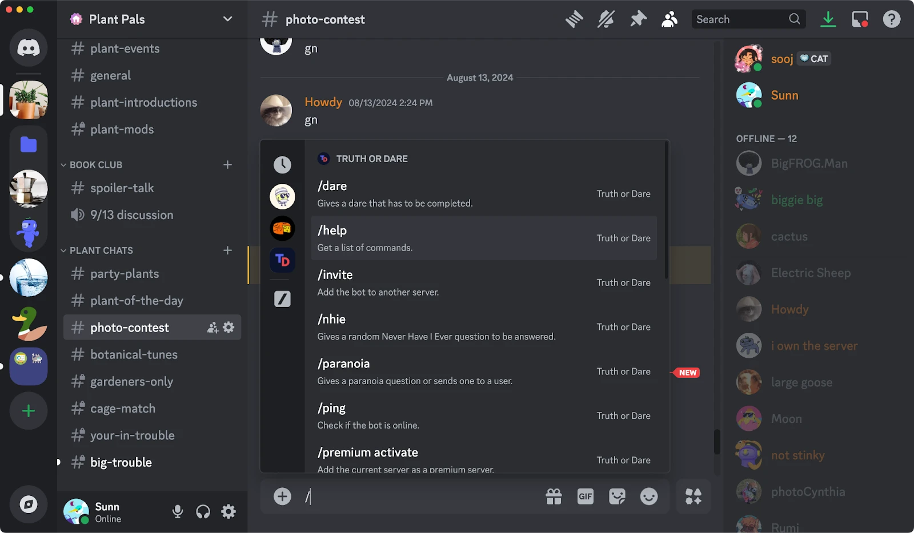

파티 · 모임 모집
게임, 시간, 모집 인원과 참가자를 관리하고 모임 시작 전에 채널로 알림을 보냅니다.
실제 Discord 화면을 기준으로 명령어, 파티 모집, 역할과 알림 기능을 구성합니다.

게임, 시간, 모집 인원과 참가자를 관리하고 모임 시작 전에 채널로 알림을 보냅니다.
서버 공지와 자주 묻는 질문을 바탕으로 답변하고, 지정된 채널에서 대화를 이어갑니다.
관심 게임이나 활동에 따라 역할을 선택하고, 새 멤버에게 환영 메시지와 이용 안내를 보여줍니다.
신고 접수, 예약 공지, 이벤트 일정과 운영 로그를 서버 흐름에 맞게 관리합니다.
/party create게임·시간·인원을 선택해 파티 모집/schedule이번 주 모임과 예약 알림 확인/ask공지와 FAQ를 참고하는 AI 질문/role관심 게임과 알림 역할 선택/report운영진에게 신고 내용 전달